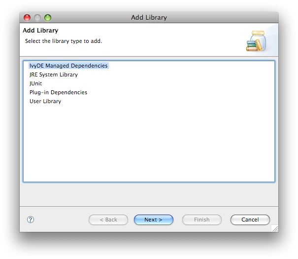
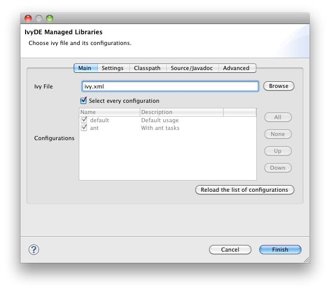
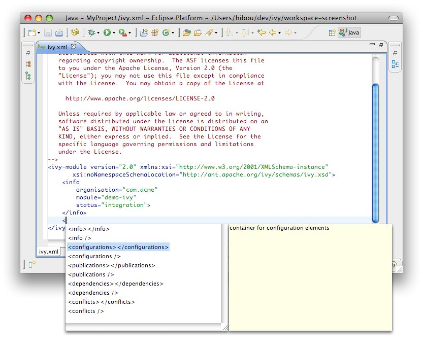
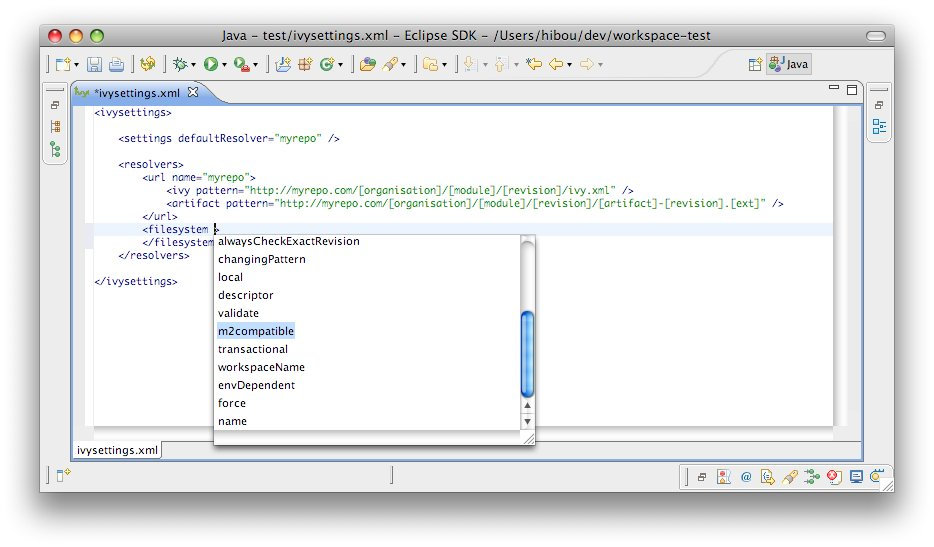

Apache IvyDE Eclipse plugin integrates Apache Ivy's dependency management into Eclipse™. It lets you manage your dependencies declared in an ivy.xml in your Java Eclipse projects, or any other kind of project which needs dependency management.
A summary of the features it provides follows:
- Managed classpath container: for Java projects, automatic build of you classpath with resolve and downloads of jars and
sources of your dependencies, and also managed project inter dependencies within the workspace. - Ivy XML files editor: creation wizard, html preview and completion for Ivy XML tags, attributes, and attribute values.
- Ivy settings files editor: completion for XML tags, attributes, and attribute values.
- Ivy console: presents every log from Ivy to assist in debugging a failing resolve.
- Reverse Dependency Explorer: helps you work with conflicting dependencies amongst several projects.
- Resolve and retrieve for non Java project: automation of the retrival of your dependencies in your non Java project
- Release Annoucement
- What is Apache IvyDE?
- Status of this release
- Major Changes in this Release
- Committers and Contributors for this Release
- List of Changes in this Release
Release Annoucement
The Apache IvyDE project is pleased to announce its 2.2.0 release.The Apache IvyDE Eclipse plugin integrates Apache Ivy's dependency management into Eclipse. It lets you manage your dependencies declared in an ivy.xml in your Java Eclipse projects, or any other kind of project which needs dependency management. Apache IvyDE will contribute to the classpath of your Java project or you can make it retrieve your dependencies directly into your project. Last but not least Apache IvyDE offer editors of ivy.xml and ivysettings.xml files with completion. Get some preview here: http://ant.apache.org/ivy/ivyde/screenshots.html
Major changes in this release:
* the API of IvyDE has been stabilized so that third party plugins can rely on it,
* while still not complete, and still not advertised as stable in Ivy, support of OSGi has been added,
* javadoc and source attachement can be edited now one by one,
* improved stability of the resolve process,
* improved logging for easier debugging.
Compatibility:
* this release is expected to work with every version of Ivy 2.1 or superior. The OSGi features require Ivy 2.3.0 or superior though.
This release is considered as stable. The beta of 2.2.0 has been out for a (too) long time.
A more detailed release notes can be read there:
http://ant.apache.org/ivy/ivyde/history/latest-milestone/release-notes.html
Download the 2.2.0 release at:
http://ant.apache.org/ivy/ivyde/download.cgi
Or use directly the Apache IvyDE's updatesite:
http://www.apache.org/dist/ant/ivyde/updatesite
Issues should be reported to:
https://issues.apache.org/jira/browse/IVYDE
More information can be found on the Apache IvyDE website:
http://ant.apache.org/ivy/ivyde/
What is Apache IvyDE?
Apache IvyDE is the Eclipse plugin which integrates Apache Ivy's dependency management into Eclipse™.Apache IvyDE lets you manage your dependencies declared in an ivy.xml in your Java Eclipse projects, or any other kind of project which needs dependency management. Apache IvyDE will contribute to the classpath of your Java project or you can make it retrieve your dependencies directly into your project. Last but not least Apache IvyDE offer editors of ivy.xml and ivysettings.xml files with completion. Get some preview here: http://ant.apache.org/ivy/ivyde/screenshots.html.
Status of this release
This release is considered as stable. The beta of 2.2.0 has been out for a (too) long time.Major Changes in this Release
The API of IvyDE has been stabilized so that third party plugins can rely on it. The developper community will now ensure that the non "internal" packages will be kept backward compatible.While it is still not advertised as stable in Ivy, some support of OSGi has been added. IvyDE can now read the OSGi metadata on the dependencies being resolved and setup the proper access rules. It doesn't work with the workspace resolver yet (see IVYDE-350).
IvyDE is automatically mapping sources and javadocs to resolved jars. But now for edge cases, it is possible to override the default mapping and edit the javadoc and source attachement jar by jar.
The resolve process, the heart of IvyDE features, has been even more stabilized and improved. For instance, now at Eclipse startups IvyDE is far less required to launch a resolve of the classpaths; the previous state of the classpath containers are saved between Eclipse sessions.
IvyDE now have its own logging channel. In the Ivy console, different levels can be chosen on how IvyDE itself is logging about the resolve processes.
Committers and Contributors
Here is the list of people who have contributed source code and documentation up to this release. Many thanks to all of them, and also to the whole IvyDE community contributing ideas and feedback, and promoting the use of Apache IvyDE !- Committers
- Maarten Coene
- Xavier Hanin
- Nicolas Lalevée
- Jon Schneider
- Gilles Scokart
- Contributors:
- Daniel Becheanu
- Peter Blstak
- Clint Burghduff
- Peter Chanthamynavong
- Gregory Fernandez
- Thomas Friol
- Troy Gaines
- Eugene Goldfarb
- Matt Goldspink
- Will Gorman
- Miguel Griffa
- Stephen Haberman
- Adam Karl
- Bernd Kurz
- Ivica Loncar
- Jeffrey M. Metcalf
- Sébastien Moran
- Marko Niemi
- Peter Oxenham
- Carsten Pfeiffer
- Joe Sortelli
- Nathan Summers
- Phillip Webb
- James Wilkins
- Anton Zagorulko
List of Changes in this Release
List of changes since Apache IvyDE 2.2.0 beta1:- NEW: The API of IvyDE is now stabilized so it can be used by third party plugins
- NEW: Support for variables in the retrieve pattern (IVYDE-326) (thanks to Carsten Pfeiffer)
- NEW: Support Accepted Types: * (IVYDE-306)
- NEW: Support Workspace/Filesystem/Variables for "Ivy File" setting (IVYDE-304)
- NEW: Retrieve list does not resolve workspace projects (IVYDE-308) (thanks to Peter Oxenham)
- NEW: Allow to set the Ivy user directory globally or project by project (IVYDE-311)
- NEW: Add support for the OSGi access rules
- NEW: Source and Javadoc attachements can now be edited jar by jar
- NEW: Support of global transitivity disabling for resolving dependency (IVYDE-334) (thanks to Anton Zagorulko)
- IMPROVE: The properties file paths can now be edited
- IMPROVE: ivy.xml and ivysettings.xml files are not better detected as such, so they can be open with the Ivy editors
- FIX: Wrong size of an icon in "about eclipse platform" (IVYDE-338)
- FIX: Disable DTD external fetching (IVYDE-329) (thanks to Stephen Haberman)
- FIX: IvyDERuntimeClasspathResolver does not resolve entries that don't implement IRuntimeClasspathEntry2 (IVYDE-335) (thanks to Nathan Summers)
- FIX: IvyDE can corrupt the workspace (IVYDE-341) (thanks to Bernd Kurz)
- FIX: org.eclipse.swt.SWTException: Invalid thread access with Eclipse Juno (IVYDE-313)
- FIX: Divide by zero during IvyDE resolve (IVYDE-312) (thanks to Joe Sortelli)
- FIX: Ivy report view stopped working on Linux (IVYDE-292)
- FIX: Ivy settings URL is constructed incorrectly from environment variable (IVYDE-314)
- FIX: Incomplete variable substitution for ivysettings.xml (IVYDE-318)
- FIX: In case of a multi-resolve, one fail make them all fail (IVYDE-316)
- FIX: Cannot change retrieve pattern at the workspace level (IVYDE-301)
- FIX: Resolution failure when workspace has project & artifact sub-element exists (IVYDE-296, IVYDE-319)
- FIX: IvyDE classpath containers become empty on eclipse/MyEclipse startup (IVYDE-317)
- FIX: IvyDE doesn't update .classpath anymore; sometimes some containers could not get initialized (IVYDE-299)
- FIX: Only one resolve is done when several are sharing the same ivy.xml and the workspace resolver is enabled (IVYDE-293)
- FIX: Problem when exporting the eclipse-plugins (compiler target 1.2) (IVYDE-293) (thanks to Carsten Pfeiffer)
- FIX: SWTException in PreferenceInitializer (IVYDE-351) (thanks to Carsten Pfeiffer)
- FIX: Error on retrieving artitfacts to project root (IVYDE-348)
Most of our changes are logged in our JIRA, where you can find comments and links to our subversion:
https://issues.apache.org/jira/browse/ivyde
Upgrading/Downgrading
This version is compatible with every earlier Apache release (since 2.0.0.alpha1). Any upgrade of Apache IvyDE should work without any worries.The reverse is not true, downgrading is not supported and may break your configuration.
Dependency on Apache Ivy
Apache IvyDE expects to be used with a version 2.1 or superior of Apache Ivy. In order to use some OSGi features, an Ivy 2.3 or superior is needed.Eclipse™ integration
Apache IvyDE has been maintained to be compatible with Eclipse 3.4 to 3.7, and 4.2.JVM compability
Apache IvyDE has been kept compatible with Java 1.4.Install the last release via Internet
For most user who have access to the internet it is simpler to install the latest release from the Apache IvyDE updatesite. So just look out there:http://ant.apache.org/ivy/ivyde/download.cgi
Manual install
Install Apache IvyDE
So you should have the zip distribution of Apache IvyDE in which you should find these files:- features/org.apache.ivyde.feature_2.1.0.XXXX.jar
- plugins/org.apache.ivyde.eclipse_2.1.0.XXXX.jar
cp features/* $ECLIPSE_HOME/features
cp plugins/* $ECLIPSE_HOME/plugins
Install the latest Apache Ivy bundle
Get the latest Apache Ivy feature and bundle for the updatesite:- the features folder
- the plugins folder
Restart Eclipse
After installing manually your plugins, you have to restart your Eclipse to have it take into account the changes. It is recommended to restart it with the -clean option on the command line.The IvyDE classpath container will help you manage the classpath of your Java™ Eclipse™ projects, based on the dependencies declared in Ivy files found in your projects.
Some of the tasks that can be performed on the container include:
- Create a container
- Edit its setup
- Launch a resolve of the dependencies
- Retrieve the dependencies in your project
- Resolve dependencies within the Eclipse workspace
- Launch software or unit tests with a classpath managed by IvyDE
- Use IvyDE with maven pom.xml
- Use IvyDE in concert with WTP
First, locate an ivy.xml file or a maven pom.xml ready to be used to build a classpath. Also, if necessary, locate a supporting ivysettings.xml.
Fast creation
For most of the projects, the ivy.xml file (or the pom.xml) is in the java project. So you can just right click on the ivy.xml and select "Add Ivy Library..." and you can directly access the prefilled setup of the IvyDE classpath containerStandard creation
The standard way to add the IvyDE classpath container is to manipulate the Eclipse™'s "Build Path":- Select the project in which you want to create an IvyDE classpath container and open the "Add Libraries" form of Eclipse (in package Explorer, in the context menu of your project choose : [Build Path]/[Add Libraries]).

- Select the "IvyDE Managed Dependencies" item.
 - Select an ivy.xml file or a maven pom.xml and the desired configurations.


During the life of your project, you can change the ivy.xml file or maven pom.xml and change its configuration.
These properties can be accessed by the context menu of the IvyDE classpath container:
- open the build path configuration dialog, select the "Libraries" panel and select the IvyDE classpath container.
- then click on the "Edit" button: the IvyDE classpath container configuration dialog will pop up.
You can explicitly ask for Ivy dependency resolution from your classpath container.
This command will invoke the "resolve" Ivy task and update your classpath container.
There is also a "refresh" action: this action is similar to the resolve one, but does not perform a full resolve if a report already exists in the cache. This is particularly useful if you work with Apache Ant and a command line so that you avoid two full resolves. It is also the default action performed on classpath containers when the Eclipse workspace is opened (Windows > Preferences > Ivy), in effect restoring the classpath container to its state prior to the last closing of the workspace if no other action is performed against the ivy.xml in the meantime.
And there is a "reload settings" action: by default IvyDE does reload ivy settings files each time a resolve it required. But in case the ivy settings file is remote, this take make the user experience quite slow. To work around that, you can check in the preference page the option to only load on demand, and use the "reload settings" action in the context menu.
You can also trigger a resolve (not a refresh!) of every IvyDE classpath container in the workspace via the button in the tool bar of Eclipse.

And to launch a resolve on a specified selection of projects:
- Select the projects you want to resolve in the package view,
- Open the context menu with a right click
- Choose Ivy > Resolve

It is possible to make the classpath container be composed of a retrieved dependencies. Instead of having the container point to the jars in Ivy's cache, jars can be retrieved in the project with a specified pattern and have the container be composed of them.
To enable this behavior, enter the classpath container configuration panel, select the third tab "Classpath" and select "retrieved artifacts".
The Delete old retrieved artifacts check box will cause IvyDE to clean the output directory before each retrieve. Note that any other artifacts other than those previously retrieved by IvyDE in this container will be deleted as well if this option is selected.
Finally, you can select which Types of artifacts should actually be retrieved (* means all).
Apache IvyDE will resolve the dependencies and artifacts you are requiring. Then with the pool of resolved artifacts, it has to decide which is a binary jar, which contains sources, and which contains javadocs. And also how to bind one on each other.
Finding jars types
There are three types of jars handled by Eclipse":- the binary jars: they will be added to the classpath in oder to compile and run; they contain the .class files.
- the source jars/zip: they will be bound to the binary one to browse dependency sources; they are basically a zip of .java files
- the javadoc jars/zip: they will be bound to the binary one to browse the API documentation of the dependencies of your project; they are a zip of .html files respectively in a layout produced by javadoc.
For the sources, it is relying on the "Sources types".
For the javadocs, it is relying on the "Javadocs types".
Binding the jars
Alorithm
The second step is to bind a source artifact with a binary one. IvyDE has the following algorithm:- first, it looks up for a specified name in the ivy.xml via the "ivyde" namespace (see bellow)
- next, if a binary jar has the same artifact name than a source one, there are bound together.
- if none matched, then IvyDE search for sources which have one of the suffix specified in "Sources suffixes".
The IvyDE namespace
In the ivy.xml file in your repository, you can specifically bind a binary artifact to a source one and to a javadoc one, so IvyDE knows for sure which bind to the other.In the artifact element, you can specify:
- ivyde:source="my-source-artifact-name" which specify the artifact name of the source to bind to the current binary one
- ivyde:javadoc="my-javadoc-artifact-name" which specify the artifact name of the javadoc to bind to the current binary one
Exemples
For instance, searching for the sources of mylib.jar (type=jar), with the default value of "Sources suffixes" ("-source,-sources,-src"), IvyDE will look to bind it to the first one existing of:- mylib.jar (type=source)
- mylib-source.jar (type=source)
- mylib-sources.jar (type=source)
- mylib-src.jar (type=source)
Same apply for javadocs with respectively "Javadocs suffixes".
With the IvyDE namespace, having the ivy.xml file:
<ivy-module version="2.0" xmlns:ivyde="http://ant.apache.org/ivy/ivyde/ns/">Without furether setup in IvyDE preferences pages, IvyDE will bind:
<info organisation="com.acme" module="mylib" />
<publications>
<artifact name="mylib" type="jar" ext="jar" ivyde:source="the-sources-of-mylib" ivyde:javadoc="the-javadoc-of-mylib" />
<artifact name="the-sources-of-mylib" type="source" ext="jar" />
<artifact name="the-javadoc-of-mylib" type="javadoc" ext="jar" />
</publications>
</ivy-module>
- the jar the-sources-of-mylib as sources of the jar mylib
- the jar the-javadoc-of-mylib as javadoc of the jar mylib
Apache IvyDE has the ability to clean the various types of Ivy caches.
On a configured IvyDE classpath container, open the context menu: a list a different clean cache action are available.
- Clean all caches: will clean every cache
- Clean the resolution cache: will clean only the cache of the resolution reports
- Clean every repository cache: will clean every cache dedicated to the artifacts
- Clean the cache 'xxxxxx': will clean only the cache with the specified name

Some projects are composed of mulpliple modules. Often, these modules have dependencies between them, dependencies managed by Apache Ivy (of course!).
Eclipse is capable of calculating the workspace's build order according to dependencies between projects. To leverage this advantage, Apache IvyDE has the ability to add a project reference to a dependency located in the workspace in place of downloading its published artifact(s) from the repository. In this way, developers can develop multi-module applications, and test the interaction between these modules, before building and publishing artifacts to the repository.
Consider a multi-module application with a considerable amount of code in each of several projects. Many developers have experienced the delays involved in waiting for Eclipse™ to build code across all of these projects even though development is only being conducted in one isolated part of the application (maybe just one or two projects). If the latest published artifact in the Ivy repository has the same source code as a module that the developer is not currently working on, simply closing that project in the Eclipse workspace and resolving dependencies on dependent projects that would resolve that artifact speeds the compilation process considerably.
First, each application module should be separate a project in Eclipse, and each of these projects should have a configured IvyDE classpath container.
To enable resolution in the workspace, go to the "classpath" panel of the classpath container and select Resolve dependencies in workspace.
- The org and name
- If there is a rev specified, dependencies should specify the appropriate range
- If there is no rev specified, only dependencies with lastest will match
- The status should match the required one: a dependency with latest.integration will only match if there is status="interation" in the info of the dependant module
| A dependency on B | B declared revision | result |
|---|---|---|
| latest.integration | 1.2 | B wired on A |
| 1.2 | 1.2 | B wired on A |
| [1.2,1.3) | 1.2 | B wired on A |
| 1.0 | 1.2 | no project wiring |
| latest.integration | none | B wired on A |
| 1.2 | none | B wired on A |
| [1.2,1.3) | none | B wired on A |
| latest.integration | $version | no project wiring |
| 1.2 | $version | no project wiring |
| [1.2,1.3) | $version | no project wiring |
- see the defaultResolveMode attribute of settings in the ivysettings.
- see the resolveMode attribute of module in the ivysettings.
WTP support
Note that WTP doesn't support IvyDE's workspace resolver. See the details in the page dedicated to WTP integration.The IvyDE classpath container can also be used in the launch configuration, run or debug.
Default behavior
By default, the container will be used because it is included in the default classpath of you project. This is the configuration that you implicitly have when you do a "Run As..." on a Java class. The container you see in the launch classpath is the same as the one you have in your project in the package explorer.Managing the classpath manually
When you do need to have finer-grained control over which configurations are visible to the runtime classpath, it is possible to edit the runtime classpath manually.By creating a launch configuration, you will get the default classpath as described above. So the first step is to remove it. Most likely, you will want to re-add your project in the user entries. Then to add an IvyDE container, choose "Advanced":

To enable the resolve before each launch, go into the "Advanced" tab and select "Resolve before launch".

If you want to use a Apache Maven™ pom.xml instead of an ivy.xml file, you can select a pom file in the configuration options of the IvyDE classpath.
When a maven pom is selected, the configurations list is updated with all maven scopes.
Both examples below are a good illustration of the simplicity of using maven poms in Apache IvyDE:
Maven1 Sample
This sample presents a simple use case involving a maven pom and the IvyDE classpath container. We are going to create an Eclipse™ project on commons-httpclient sources.- Download the commons httpclient sources
- Unzip this file (c:/tmp/commons-httpclient/)
- Create a new Eclipse java project based on the unzipped sources (c:/tmp/commons-httpclient/)

Note: your project willnot compile: some imports cannot be resolved.


Maven2 Sample
This sample demonstrates how the IvyDE classpath container on a Apache Maven 2 pom can handle transitive dependencies.- Create a new empty java project in Eclipse.
- In your project, create an ivysettings.xml file:
<ivysettings>Using the m2compatible attribute, you can benefit from Apache Maven 2 repository compatibility.
<conf defaultResolver="ibiblio"/>
<resolvers>
<ibiblio name="ibiblio" />
</resolvers>
</ivysettings>
- In your project, create a pom.xml file:
<project>- On the pom.xml file, open the context menu and click on "Add Ivy Library...":
<modelVersion>4.0.0</modelVersion>
<groupId>com.mycompany</groupId>
<artifactId>myproject</artifactId>
<version>1.0-SNAPSHOT</version>
<dependencies>
<dependency>
<groupId>commons-httpclient</groupId>
<artifactId>commons-httpclient</artifactId>
<version>3.0</version>
</dependency>
</dependencies>
</project>
- Select the configurations compile and runtime
- That's all! Your IvyDE classpath container resolves all dependencies including those that were transitive to the commons-httpclient module!

WTP refers to the Web Tools Platform project from the Eclipse Foundation which allows Eclipse™ users to easily develop, launch and debug web applications. Apache IvyDE works with WTP 2.0+ (Eclipse 3.3+).
In the properties of your project configured to use WTP, there is a section titled "Java EE Module Dependencies". In this section you will find the IvyDE classpath container listed, usually with the name "ivy.xml [*]". Select it and dependencies found in the IvyDE classpath container will be deployed as well.
IBM™ Rational Application Developer (RAD™) 7.5.3+
Users of RAD 7.5.3 will notice that the classpath container is not listed in the table. RAD prevents the deployment of classpath containers by default. To allow this behavior, selection Windows > Preferences > Java EE. Check "Allow loose classpath module dependencies". RAD will present you with a warning message. To enable the behavior, you need to check the option again in the popup and click Yes.
Note: due to a bug in RAD 7.5.3, this IBM specific property is not persisted when we close the workbench and reopen it. To work around this:
- Export RSA preferences ( File > Export > General > Preferences)
- Open the exported .epf file and replace
/instance/org.eclipse.jst.j2ee/org.eclipse.jst.j2ee.preferences.allowClasspathDep=false
with
/instance/org.eclipse.jst.j2ee/org.eclipse.jst.j2ee.preferences.allowClasspathDep=true - Load the modified .epf
Resolve in workspace
WTP doesn't support classpath containers like IvyDE's or Maven's one which can link to a Java project in a workspace.A feature request has been opened in WTP's Bugzilla: see bug #184125.
If you really want to link a Java project into the classpath of a WTP project, you should folow what is described in the comment #12 and the comment #17:
- in your ivy.xml of your WTP project, exclude from your dependencies the java projects you want to link to (you can create a specific Ivy configuration for that, so it won't mess with the configurations used by an Ant build for instance)
- make sure your Java project is a WTP "utility" project
- make sure any IvyDE classpath container in the Java projects has been added to the deployment assembly
- in your WTP project, add the IvyDE container which resolve the dependencies excluded your Java project dependencies
- in your WTP project, add your Java project dependencies to the WTP project using existing deployment
assembly facilities
Ivy is a generic dependency manager and can manipulate jars as well as any other kind of resources. IvyDE leverages this feature by bringing dependency management to non Java Eclipse projects.
In this document we will document how to work with IvyDE and non Java dependencies with a concrete exemple: we will manage the dependencies between some javascript files and bring them into a Java webapp.
Import the sample project into Eclipse
The full project sample can be downloaded from there. Unzip it somewhere and import it into Eclipse (see "Existing Projects into Workspace" in the "Import" menu).The Eclipse project is already configured with an IvyDE classpath container so we can run the Java webapp. We will just have to add the retrieve of the javascript files.
Configure the non-Java dependencies
Configure the Ivy nature
In order to manage dependencies with Ivy, it is required for the Eclipse project to have the "Ivy" nature.In the sample project, an Ivyde classpath container is already configured, so the Eclipse project already has the "Ivy" nature.
In case your project doesn't has it, right click on the project and in the menu "Configure" select "Add Ivy dependency management".

Add a retrieve setup
Now that the project has the Ivy nature, a new entry should have appeared in the properties of your project. This is where non Java dependencies are managed.
Name
It gives a human readable name to the retrieve setup. This name will be used later in the context menu to actually launch a retreive of the dependencies.For the sample project, let's choose "javascripts".
Ivy file
The ivy file which declares the dependencies to retrieve.For the sample project, we will use the same one has the one which is used for the Java dependencies (it is not required).
Retrieve pattern
It defines where the dependencies should be retrieved.For the sample project we want them there: src/org/apache/ivyde/sample/webappjsrepo/js/[artifact]-[revision].[ext].
Delete old retrieved artifacts
Before doing a retrieve, the location where the dependencies are dowloaded will be wiped out is this option is selected.Configurations
This is a comma separated list of configuration names which will be used for the resolve (* means All).For the sample project, we want it to be js.
Types
This is a comma seperated list of type names which is be retrieved (* means All).For the sample project, we want them all: *.
Now in the "Settings" tab, the setup entries are the same as the global ones. Click on "Enable project specific settings" to customize for your setup.
Finally, click OK to finish.
Launch a retrieve
Now that the retrieve is setup, a new entry should be available in the "Ivy" context menu. The menu entry should be "Retrieve 'xxx'" where "xxx" is the name you gave to the retrieve setup. For the sample project, it will be "Retrieve 'javascripts'".Select the entry to actually launch the retrieve. The Eclipse project get automatically refreshed with the retrieved files. For the sample project look into src/org/apache/ivyde/sample/webappjsrepo/js/jquery-1.7.1.min.js.

Launch the sample webapp
To see the result, we'll launch the Java webapp and look it it your browser locally.Right click the Java class org.apache.ivyde.sample.webappjsrepo.HTTPServer and select "Run As" / "Java Application".
Now open the web page http://localhost:8888/index.html
If working properly, the javascript files should have been properly loaded and the input field should have automatically been filled with a default value.
Apache IvyDE comes with an Ivy file editor that provides an editor that performs code completion for Ivy xml tags based on the real-time state of your repository. It also packs with an Ivy file creation wizard and HTML preview.
Creation Wizard
To use the creation wizard, choose File > New > Other > IvyDE > Ivy file in the Eclipse menu (Ctrl+N by default). Select it and click Next.

- Wizard fields:
- Container: you must select a target project. (This is already set if you access the wizard through the context menu on your project root folder).
- File name: the Ivy file name (ivy.xml by default).
- Organisation: the component owner name. (your company name or the company that provides the component if you are writing an ivy.xml file for 3rd party jars). Note that this value can be set in the Ivy preference page.
- Module name: the component name.
- Status: the status of the project. (integration by default since we have just created its ivy file. Please refer to the Ivy documentation for more details).
Ivy Editor
Completion comes with contextual help. The completion popup is displayed when through the CTRL + SPACE shortcut.
Available completions:
- XML structure: Allows you quickly to insert valid tags at the right place. If the tag can have nested children, both notations, simple tag and open tag, are proposed.
 - Tag attributes: When your cursor is placed in a tag bracket, the completion shows available attributes for the enclosing tag.

- Attributes values: When your cursor is placed inside the quotes of an attribute value, the completion shows available values for the matching attribute.
- Available value completion
- info: organisation (preference based), module (Eclipse project name),
- info/ivyauthor: name (preference based), url (pref based)
- info/description: homepage (pref based)
- info/license: name
- info/repository: name (the other attributes depend on it), url, ivys, pattern, artifacts
- configurations/conf: visibility, deprecated, extends
- publications/artifact: type, conf, ext
- dependencies/dependency: org, name, rev are resolved thanks to Ivy using the ivyconf set in the project Ivy preference page. If not set to "default" Ivy uses its defaults resolvers configuration (ie Ivyrep + ibiblio), and if these are not set Ivy uses the ivyconf set in the Eclipse Ivy preference page. conf values are computed from the current ivy.xml file and the dependency ivy.xml file if any.

IvyDE provides an editor of ivysettings.xml files. It provides completion on all tag and attribute names.

Available completions:
- XML structure: Allows you to quickly to insert valid tags in the right place. If the tag can have nested childrenm, both notations, simple tag and open tag, are proposed.

- Tag attributes: When your cursor is placed inside a tag bracket, the completion shows available attributes for the enclosing tag.

Apache IvyDE maintains a global configuration, which controls the behaviour of every Ivy instance in every project in the workspace. This global configuration can be overrided in each project.
The global configuration can be found in the preferences of Eclipse (menu Window > Preferences for Windows and Linux users, Eclipse > Preferences for mac users), and select the item Ivy.
Global Ivy preferences
Offline
If checked, it will force Ivy to never check resources via any network and trust its cache
Open the Ivy console on startup
If checked, the Ivy console will be opened on startup so that every log from Ivy will be printed. This is especially usefull when looking for debug log from IvyDE starting up.
On Eclipse startup:
Specifies what Apache IvyDE should do in every project containing an IvyDE managed classpath container when Eclipse™ is starting up.
On Ivy file change:
Controls whether a resolve is performed each time Eclipse detects a change on an ivy.xml file configured by an IvyDE container via a save in the editor, a refresh, or a team/update.
Organisation:
Your company name for Ivy editor completion.
Organisation URL:
Your company web site url for Ivy editor completion.
Open a popup on each failed resolve
On a resolve error, IvyDE mark an error on the ivy.xml of the project; if checked it will also open a popup with a detailed error message
Advanced
Resolve before launch:
An IvyDE container can be used in the classpath of a launch configuration, and the container can be resolved on each launch. See the documentation about launch configurations for further information on this feature.
Use extended resolve id
A resolve id is an identifier which helps Ivy to make cache of results of resolve. By default IvyDE each the id which is composed of the organisation and the module name. An extended resolve id is also composed of the status, branch and revision. If you have troubles with the resolve of multiple versions of the same project within the same workspace, you should probably enable this option.
Classpath container
Resolve dependencies in workspace:
Apache IvyDE allows Ivy dependencies between projects in the workspace to be realized through project references rather than jars from the repository. See the documentation for further information on this feature.
Resolve dependencies transitively
If unchecked, the dependencies will be resolved with transitivity disabled regardless to the settings in ivy.xml
Read OSGi metadata:
If your classpath is based on jars which are actually OSGi bundles, checking this option will make IvyDE read the jar manifests and setup the specific OSGi visibility constraints.
Accepted types:
A comma separated list of extensions which will make IvyDE add the artifact to the classpath. Setting * will make very kind of type accepted. Note that a type specified as a source or javadoc type won't be accepted in any manner.
Order of the classpath entries:
By default, the classpath container entries are ordered by order of declaration in the ivy.xml. When there are many entries, it can be useful to have them ordered lexically for enhanced readability.
Build the classpath with:
Either Ivy with build a classpath with references to the artifacts in its cache.
Or Ivy will retrieve the artifacts with the specified pattern, and then build a classpath with the retrieved jars.
- Retrieve pattern: The pattern to use for the retrieve. Check Ivy documentation for pattern explanation.
- Delete old retrieve artifacts: On each retrieve, the previously retrieved libraries will be removed (similar to the sync argument in the Ant task).
- Types: The types of artifact to retrieve (a comma separated list)
Ivy settings
Reload the settings only on demand:
By default, Apache IvyDE will parse the ivy settings file each times it is needed (each resolve, refresh, clean cache or completion in the ivy editor). For remote ivysettings this can slow the UI dramatically, so it is possible to make IvyDE keep the settings in a cache and only reload them via the context menu on the container).
Ivy settings path:
The path to your ivy settings file. Leave it blank to use Ivy default resolvers. See also the documentation about Eclipse variables.
Ivy user dir:
The path to the default Ivy user directory, where Ivy have its default cache location
Property files:
This is a list of Java properties files to load before loading the ivysettings.xml. Specify in this files properties which you expect to use in the ivysettings.xml
Source/Javadoc mapping
Sources types:
A comma separated list of Ivy "type" names which should be considered sources.
Sources suffixes:
A comma separated list of suffixes which will make IvyDE attach as source the artifact with the suffix to the artifact without the suffix. For instance, "commons-lang-sources.jar" will be attached as source to "commons-lang.jar" with the default value.
Javadoc types:
same as sources types but for javadocs
Javadoc suffixes:
same as sources suffixes but for javadocs
Auto map jar artifacts with unique source artifact
If checked, in case there is only one artifact which is detected of type source, then IvyDE will consider this artifact the source of every jar of the module
Auto map jar artifacts with unique javadoc artifact
Same as above but with javadoc
For further information on how the mapping works, checkout this specific documentation.
Workspace resolver
Closing trigger resolve:
Closing a project which has the workspace resolver enabled will trigger a resolve on every project that depends on it.
Opening trigger resolve:
When a project is opened, IvyDE will trigger the resolve of every other project which has the workspace resolver enabled.
Ignore version when resolving workspace projects:
This option forces the workspace resolver to ignore the version of a module specified in an ivy.xml if a project containing an Ivy file with that module organization and name is found in the workspace, instead substituting a project reference. This may have unintended consequences.
For further information on how the workspace resolver works, checkout this specific documentation.
XML Editor
This configuration panel allow you to change the color used in the Ivy file editor and the Ivy settings editor.Eclipse contains a string substitution mecanism. This feature allows you to specify a path location that can be shared between developers.
Apache IvyDE uses it to find the ivysettings.xml and properties files in both the global preference page and the project specific preference page.
Using the "Workspace..." button will open a window to choose a file in the workspace. Apache IvyDE will automatically fill the field with the proper variable.

Finally, you can choose to depend on the Eclipse variable system by clicking on "Variable...".

Previously, Apache IvyDE supported the project://projectName/path/to/file.ext protocol. It sill does, but references of this style will be automatically converted in the saved settings to the Eclipse variable way of defining this path: ${workspace_loc:projectName/path/to/file.ext}.
The Ivy console provides the Ivy working traces that are visible in the command console. This view can be useful for understanding what Apache Ivy and Apache IvyDE are doing under the covers.
The Ivy Console can be accessed within your Eclipse Console view, by selecting the "Ivy Console" item.

The colors in the console correspond to the different log levels. Here is the default mapping:
- Debug: light blue
- Verbose: green
- Info: black
- Warn: orange
- Error: red
The IvyDE logs are here to help you understand what IvyDE actually do when launching a resolve or refreshing a project. They can be espacially usefull in debug mode when reporting a bug to the developpers of IvyDE.
To change the level of logging in the console, use the button in the view:

Most Eclipse™ distributions include a plugin to launch Apache Ant build files. The provided Apache Ant distribution is a standard distribution of Ant that doesn't include Apache Ivy. You may wish to run Ivy targets against Eclipse's Ant distribution.
Install the plugin
Since IvyDE 2.2, a dedicated plugin can be install so that Ivy Ant tasks are automatically added to Ant's classpath. Go check the IvyDE updatesite and install the plugin named "Apache Ivy Ant Tasks"Manual Configuration
If you want to install your custom version of Ivy, you'll need to do it manually.In the global preference page of the Ant runtime, click on Add External JARs...

Run Apache Ivy targets
Create an Ant build file and declare the Ivy targets with:
<taskdef resource="org/apache/ivy/ant/antlib.xml" uri="antlib:org.apache.ivy.ant" />
And don't forgot to declare the namespace xmlns:ivy="antlib:org.apache.ivy.ant".After the taskdefs have been added, you will have code completion on Ivy tasks:


Introduction
When working with multiple projects in a workspace that represent the whole or part of a larger application, you may want to simultaneously change the revisions of dependencies in several Ivy files to a single new revision all at the same time (notwithstanding the eviction mechanism inherent to Apache Ivy).At other times it is instructive just to see what dependencies are being utilized by projects in the workspace by revision without having to dig into each project and look at each individual module descriptor.
The Reverse Dependency Explorer turns the dependency tree upside-down, exploring the workspace by organization, module, and revision and providing a mechanism to synchronize revisions across projects/classpath containers.
Consider the following workspace, with three projects, all of which have an ivy.xml file at their project root. Each of these Ivy files has an associated IvyDE managed classpath container.

Right clicking on any (or all) of the projects and selecting Ivy > Reverse Dependency Explorer opens the view. The explorer displays a tree structure with an item for each organization/module pair. The third column lists all of the revisions of this pair for the selected projects. Expanding a tree item, you can see the module revision that a given Ivy classpath container depends on (if at all). Note that the view only shows direct dependencies and no transitive dependencies.

Organization/module pairs that have conflicting revisions are highlighted in red (junit in the above example). Note that in the above example, though the revisions do not match, these two revision attributes may actually resolve to the same artifact, depending on what is available in the repository. The view does not attempt to perform a resolve and match the resolved artifacts. It simply compares the text of the attributes.
Synchronizing revisions
To synchronize revisions, click in the column and row of the item you want to change and type in the new revision. The item should be highlighted green to indicate that it is tagged for synchronization. Click the synchronize button as shown to save your changes.
The resolve vizulizer show the graph of the dependencies of a project.
Open the view
To open it, you should open the corresponding view: in the "Window" menu, open the "Show View" submenu and select "Other..."; the view "Ivy Resolve Visualizer" should be found in the "IvyDE" category.
Show a project dependencies
Once the view is open, click on the button to select a container and see the result:
Adding new features or fixing bugs needs community involvement.
Here you will find the basics for how to get involved:
This page describes how to build the Apache IvyDE plugin from the source. The build is based on the Eclipse™ build system so it requires an Eclipse install. You also need to have an Ivy bundle installed.
Setup of the build
Eclipse installation
You need first an Eclipse install which contains the PDE plugins (by default included in the "SDK" and "Classic" versions). We will refer to the eclipse installation path in the documentation as $ECLIPSE_HOME. In that $ECLIPSE_HOME folder you should have the plugins and features folders.It is recommended to have an eclipse installation dedicated to the build. So you will be able to have better control over the Ivy bundle installed there. And as the build clean the internal cache of Eclipse, running an eclipse and building with the same instance might raise some troubleshootings in the IDE.
Lots of ant target depends on that Eclipse installation, so they need a baseLocation property to be defined. Note that you can avoid specifying that property in each command line by having a local.build.properties file which contains somethink like:
baseLocation=/home/me/tools/eclipse-3.4
The Apache Ivy bundle
The IvyDE plugins depends on the Apache Ivy 2.0 OSGi bundle. So the Ivy bundle have to be installed in the Eclipse installation before starting the build. An Ant target will accomplished that task quite automatically. Inline help will be displayed when no property is specified:ant install-ivyNote: due to an old bug in the build script of Ivy, the OSGi version of Ivy is "0.0.0" for every version older than the 2.0.0-RC1. So older version than 2.0.0-RC1 is not supported.
Building
First somehow you got some sources, for instance from the ASF subversion repository:svn co https://svn.apache.org/repos/asf/ant/ivy/ivyde/trunk ivyde-trunkor get directly the released sources from the distribution.
And go into the root folder of the sources. In that folder you should see the builder, org.apache.ivyde.eclipse and org.apache.ivyde.feature folders.
And run the build:
ant build -DbaseLocation=$ECLIPSE_HOMEThen in the created directory "work" you will find a directory (something like 2.0.0.alpha1-200804171513) in which you will find the zip archive ready to be unzipped in an Eclipse install.
Install
After a successful build you should have a zip file at dist/org.apache.ivyde.feature-$VERSION.zip. The zip file contains the "plugins" and "features" folders ready to be unzipped in an Eclipse install. So here is the process:cd $ECLIPSE_HOMEThen start your Eclipse and enjoy !
unzip ...../dist/org.apache.ivyde.feature-$VERSION.zip
This documentation is defining every steps that needs to be accomplished when releasing Apache IvyDE.
In this doc, the released version is denoted as $VERSION, so it HAVE to be replaced in the command line argument accordingly. There is also some $LOGIN which is referencing your login on the Apache machines.
Prepare
Jira
First in Jira make sure that no more issues are opened for the target release.Release notes
Make sure the release notes and the annoucement are up to date. Look at doc/release-notes.html. Remove there anything which refers to a draft status.Release branch
Some modifications of the branch are need to do the release. So a new branch is needed:svn copy https://svn.apache.org/repos/asf/ant/ivy/ivyde/trunk \and then checkout it:
https://svn.apache.org/repos/asf/ant/ivy/ivyde/branches/$VERSION \
-m "Creating a release branch for IvyDE $VERSION"
svn co https://svn.apache.org/repos/asf/ant/ivy/ivyde/branches/$VERSION ivyde-$VERSION
Documentation release
The documentation have to specify the correct version number:In the files:
- doc/template.html
<title>${title} | Apache IvyDE $VERSION Documentation</title>
You'll need to fix the revision of the svn:external in doc. Edit the svn:external property on the folder doc and set it to the latest revision. It should look like:
xooki -r1306546 https://svn.apache.org/repos/asf/ant/site/xooki/
style -r1306546 https://svn.apache.org/repos/asf/ant/site/ivyde/sources/style/
Commit your changes
Don't forget to commit the changes you've done into the release branch.Building
Make sure you have a proper working copy with a svn status. You should have no modification.Then launch the build:
ant /release clean dist -DbaseLocation=/home/me/...../eclipse/And sign the artifacts:
./signArtifacts.shThen it is time to tag the release as soon as you are happy with your artifacts:
svn copy https://svn.apache.org/repos/asf/ant/ivy/ivyde/branches/$VERSION \
https://svn.apache.org/repos/asf/ant/ivy/ivyde/tags/$VERSION \
-m "Tag IvyDE release $VERSION"
Prepare the updatesite
The instructions to build the updatesite are there.Vote for the released artifacts
First the release needs to be publicly available.You can use the dev area of the dist subversion for that. Then just commit the artifacts into https://dist.apache.org/repos/dist/dev/ant/ivyde/$VERSION
And launch the vote on the ant-dev mailing list:
Subject: [VOTE] IvyDE $VERSION ReleaseNote: this page is defining when and how a release can be accepted.
I have built a release candidate for Apache IvyDE $VERSION
The tag is here: http://svn.apache.org/repos/asf/ant/ivy/ivyde/tags/$VERSION
You can download the distribution from this URL: https://dist.apache.org/repos/dist/dev/ant/ivyde/$VERSION
The Eclipse p2 repository is there: https://dist.apache.org/repos/dist/dev/ant/ivyde/updatesite/ivyde-$VERSION
Do you vote for the release of these binaries?
[ ] Yes
[ ] No
Regards,
$ME, IvyDE $VERSION release manager
Deployment
Publish the artifacts
The binaries have to be pushed with their signatures and checksums in the apache dist. It is manageg by svnpusub so it needs to be committed into the subversion https://dist.apache.org/repos/dist/release/ant/Then just do:
$ svn mv https://dist.apache.org/repos/dist/dev/ant/ivyde/$VERSION https://dist.apache.org/repos/dist/release/ant/ivyde/$VERSIONIn order to keep the main dist area of a reasonable size, old releases should be removed. They will disapear from the main dist but will still be available via the archive. To do so, just use the svn rm command against the artifacts or folders to remove.
Deploy the updatesite
Follow the instructions of that page.Annoucement
The annoucement should have been already prepared and reviewed by other committers. Its content can be found in doc/release-notes.html.With that content, send a mail to announce@apache.org, ivy-user@ant.apache.org and dev@ant.apache.org with the title "[ANNOUNCE] Apache IvyDE $VERSION released", and with your apache email as sender (announce@ requires it).
Update the documentation
Update the table of content
The table of content needs to be updated so that the last documentation point to that new release.First we need to update the external links. In svn/site/ivyde/sources/history:
svn pe svn:externals .And:
- update latest-milestone:
latest-milestone https://svn.apache.org/repos/asf/ant/ivy/ivyde/branches/$VERSION/doc
- add an entry:
$VERSION https://svn.apache.org/repos/asf/ant/ivy/ivyde/branches/$VERSION/doc
- add the following data to the correct abstract node:
{
"title":"$VERSION",
"url":"http://ant.apache.org/ivy/ivyde/history/$VERSION/index.html"
} - update the title of the latest-milestone history entry:
"title":"Documentation ($VERSION)"
Update the download page
In the page svn/site/ivyde/sources/download.html change every reference of the old version to the new one.Deploy
All site editing being done, commit your changes.And now let's generate the site and deploy it:
- generate the part of the site for the new version:
- generate the website with the new toc:
- you should verify that the site generated in target is OK. And once your happy with it, commit the changes in target (some svn add might be needed !)
ant generate-history -Dhistory.version=$VERSIONWARNING: that target is modifiying the toc.json in the imported branch so that the generated html have a proper version declared in the toc. You should not commit that change. Once the site has been generated, you may want to revert the changes so you won't commit it by mistake. (TODO: process to improve so we shouldn't worry).
ant /all generate-site
Post release tasks
Jira
Update the IvyDE Jira project: mark the version as released.Bump the version
Update the versions needs to be updated in the following files:- build.properties (edit the qualifier)
- */META-INF/MANIFEST.MF
- */feature.xml
Update the doap file
Add the just released version in IvyDE's doap file: see doap_IvyDE.rdf at the root of the project.Clean up the release notes
Edit the release notes in the documentation (doc/release-notes.html) so it can be prepared and maintanined for the next release:- edit the content under "Release Annoucement": edit the version it is talking about and clean it up so it is a summary of the release notes
- edit the content under "Status of this release": update it with the goal of the next release, or a TODO if it has not yet been defined
- edit the content under "Major Changes in this Release": wipe it all and put there something like "Nothing done yet"
- edit the content under "List of Changes in this Release": remove the list of entries and update the version in "List of changes since Apache IvyDE X.X.X"
Once a release have been build for Ivy or IvyDE, they should be pushed to the Eclipse updatesite so that Eclipse users will be able to update automatically their installed version of Ivy or IvyDE.
This doc is in two parts, the setup of the updatesite which will be the candidate for the vote of the Ivy or IvyDE release, and the final deployment once the release is accepted.
Important note: in this doc, the released version is denoted as $VERSION (and have to be replaced accordingly in every commands), but this is the OSGi one, not the usually shown one, in particular for release candidate versions. For instance an Ivy version can be 2.0.0-RC1 but the OSGi one, and the one to use here is 2.0.0.cr1.
Build a p2 repository
The svn location of the updatesite builder is there: https://svn.apache.org/repos/asf/ant/ivy/updatesite/trunk . We will build the p2 repository dedicated to the version to release.- For an Ivy release:
As you have a build jar for Ivy, just do:ant build-ivy-p2-repo -Divy.jar=...../path/to/ivy.jar
-
For an IvyDE release:
The zip distribution needs to be unpacked into the updatesite directory:ant build-ivyde-p2-repo -Divyde.zip=...../path/to/org.apache.ivyde.feature-${VERSION}.zip
- For an Ivy release:
-
./signArtifacts.sh ivy-${VERSION} -
For an IvyDE release:
./signArtifacts.sh ivyde-${VERSION}
Test the updatesite
The updatesite is ready to be tested at: https://dist.apache.org/repos/dist/dev/ant/eclipse-updatesite/ivyde-${VERSION}In case of an unaccepted release
In case the release has not been accepted by the PMC, don't forget to cleanup the svn repository. To do so, just run:svn rm https://dist.apache.org/repos/dist/dev/ant/eclipse-updatesite/ivyde-$VERSION -m 'Remove rejected release'
Deployment of a release
Clean up old releases
First, you may want to remove from the main repository references to the older releases. Note also that the ASF policy regarding the space occupied by the main dist is about rectricting to only have the main stable released version available there; older are archived on archiche.apache.org.To remove a version from the main dist, you'll need to remove the data and remove its reference in the main updatesite.
To remove the data:
svn rm https://dist.apache.org/repos/dist/release/ant/ivyde/updatesite/ivyde-$OLD_VERSION -m 'Remove old version'Then the version listed in the updatesite are maintained in
Then you have to decide if the version you removed should be still listed in the Eclipse updatesite or not.
- To remove a version from the listed one, edit the file versions.xml
- If the version should no appear anymore, just delete the line about the deleted version.
- If the version should still be listed, prepend the reference to the old version by http://archive.apache.org/dist/ant/ivy/updatesite/
Publish the p2 repository data
It is just about moving data (svn rm is not allowed, the two steps are required):svn cp https://dist.apache.org/repos/dist/dev/ant/eclipse-updatesite/ivyde-$VERSION https://dist.apache.org/repos/dist/release/ant/ivyde/updatesite/ivyde-$VERSION -m 'publishing the p2 repo of the release of IvyDE $VERSION'
svn rm https://dist.apache.org/repos/dist/dev/ant/eclipse-updatesite/ivyde-$VERSION -m 'Remove accepted release'
Regenerate the main repo
Last but not least, the p2 repository should now list the new release.Edit the file versions.xml, and add a line about the released version:
<child location='ivyde-2.1.0'/>NB: adding or removing lines in versions.xml infer that you should edit the size attribute in the versions.xml, it should correspond to the number of "child".
And run:
ant build-main-p2-repoAnd now commit every modification in dist/release.
This page describe how to setup an environment to develop IvyDE.
Requirement
Eclipse plugins
-
You need some plugins installed in your Eclipse:
- the PDE plugins
- the Zest plugins if you want to work with the IvyDE resolve visualizer
The Zest plugins can be found in the Eclipse updatesite of your Eclipse distribution (Indigo, Juno, etc...). Under the section "Modeling", the feature to install is called "Graphical Editing Framework Zest Visualization Toolkit SDK".
Ivy
You will also need Ivy as it is a dependency of IvyDE. Either you will work against a release version of Ivy, or work against an- build form the source in your Eclipse. Note that even when working against a released version, you will still be able to run in debug mode, see the sources and put break points in Ivy code. You just won't be able to modify the sources.Running against a released version is the simpler. Just install it from the IvyDE updatesite in you Eclipse.
Otherwise you will need to setup a project for Ivy in your workspace, see next section.
Setup
Import Ivy
If you want to run against an Ivy from source in your workspace, you must import the Ivy project in your workspace. Otherwise, you can skip this section.The Ivy sources already contains the Eclipse metadata. Just "Import" from "Existing Project into Workspace".
Import IvyDE
Once the required plugins are installed, you can import the IvyDE plugins and features into your workspace. Just do a regular "Import" from "Existing Project into Workspace".If you just have to fix a bug or add a little feature to IvyDE, just import the "org.apache.ivyde.eclipse" plugin.
If you intend to work on the resolve visualizer, you should import the plugin "org.apache.ivyde.eclipse.resolvevisualizer".
Launch
You will have to create you "Launch configuration".- In the Debug menu, select "Debug Configuration...".
- On the section "Eclipse Application", right click and select "New".
- Give a better name to your configuration: "IvyDE".
- You may want to give a better location to the workspace in which the forked eclipse will run: for instance "${workspace_loc}/_eclipse/runtime-IvyDE"
Advanced tips
Console log
For old version of Eclipse only, in recent ones the option is automatically added.By default the logs of the forked Eclipse just goes in the Error log of the forked Eclipse. It is not ideal when browsing a stack trace since you will have to switch between the 2 Eclipse.
Just add "-consoleLog" in the "Program Arguments" of the launch configuration so that errors of the forked Eclipse will go in the console of the host one.
Slow fork
Your hosting Eclipse may have a lot of plugins installed. By default, forking an Eclipse will launch with the same plugins. So forking may take some time and can be painful while developing.In the launch configuration, you can tune what plugins should be loaded in the "Plug-ins" tab. Select "plug-ins selected below only". Then it is quite tedious to know which one should be selected. The button "Add Required Plug-ins" will help you not missing one.
- Basically you will need:
- org.eclipse.ivyde (in your workspace)
- org.eclipse.ivy (in your workspace if you have one)
- org.eclipse.sdk
- org.eclipse.jdt.*